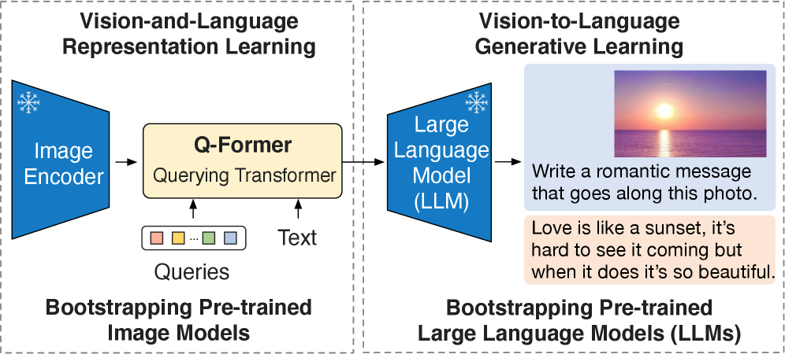
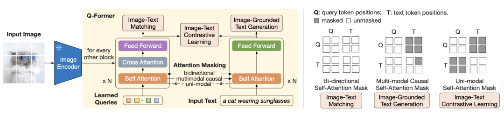
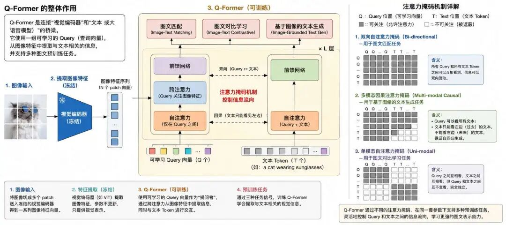
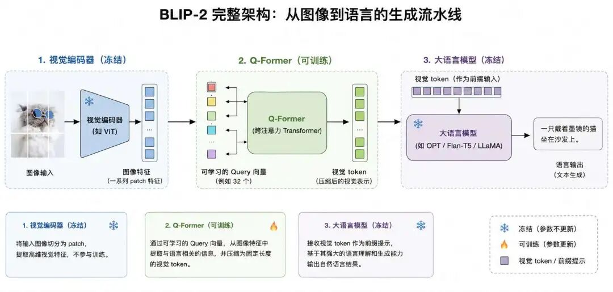

"AI 研究 70 年来最大的教训是：那些善用算力的通用方法终将最为有效--而且优势悬殊。"--《强化学习：导论》作者理查德·萨顿
2022年，当Stable Diffusion正在颠覆文生图领域时，多模态理解方向反而陷入了一个尴尬的瓶颈：CLIP虽然奠定了图文对齐的基础，但缺乏细粒度推理能力；而GPT等大语言模型虽然擅长语言理解，却天生"看不见"图像。两条路各跑各的，谁也接不上谁。
就在这个节点，Salesforce Research于2023年1月发布的BLIP-2，以一种"四两拨千斤"的思路，把这两条路接到了一起。
BLIP-2最核心的贡献是提出了Q-Former架构，一个轻量级的视觉-语言适配器，它像一位"多模态翻译官"，既能精准理解图像的细粒度特征，又能无缝对接冻结的大语言模型。
这一设计的厉害之处在于它不需要从头训练一个庞大的多模态模型，仅通过训练一个小巧的适配器，就能让 ViT 级别的视觉编码器与 OPT/FlanT5 级别的语言模型"对话"，实现少样本推理、图文生成和视觉问答的跨越式提升。
如果说CLIP是多模态的"地基"，搭建了图文对齐的基础框架，那么BLIP-2就是多模态的"推理引擎"，首次把大语言模型的强大推理能力引入视觉领域，完成了从"统计关联"到"语义理解"的关键一跃。它不仅是 2023 年多模态领域的"现象级"模型，更直接成为后续 LLaVA、MiniGPT-4 等指令调优多模态模型的技术蓝本和范式，深刻影响了整个领域的发展方向。
要理解BLIP-2为什么是一次跃迁，我们必须先回到 2022 年底，看看当时的研究者到底"卡"在了哪里。当时的多模态研究分为两大阵营，各自都很强，但各自也都有一道迈不过去的坎：
CLIP通过对比学习实现了图文的全局对齐，能很好地完成"图像分类""图文检索"等任务。但只要任务一旦从"判断匹配"升级为"细粒度理解和复杂推理"，它就几乎束手无策。
原因其实可以一句话讲清：CLIP 的训练目标只让"整张图"和"整段文字"在向量空间里靠近，它从一开始就没被要求去关注图像的局部、也没被要求生成任何文字。这导致它有三条天花板：
同一时期，GPT-3 这类大语言模型在语言理解和生成上已经令人惊叹，但它们有个先天的"残疾"，眼睛是闭着的：
事实上，在 BLIP-2 之前，DeepMind 的 Flamingo在2022 年 4 月已经率先做过一次"接 LLM"的尝试，并且当时是少样本视觉问答的 SOTA。
它的思路是：保留冻结的视觉编码器（NFNet），用一个轻量级的 Perceiver Resampler 把可变长度的视觉特征压缩成固定数量的视觉 token；
然后在冻结的 LLM（Chinchilla）的 transformer 层之间，每隔几层就插入一组带门控的交叉注意力（gated cross-attention）模块，让 大模型 在生成每一个 token 时都能"瞥一眼"图像。
Flamingo 证明了"冻结视觉编码器 + 冻结 大模型 + 中间适配模块"这条路是可行的，但它有一个绕不开的代价，必须在 大模型 内部插入新的可训练层。
这意味着：大模型 架构必须被深度改造，不能拿别的 大模型 直接换装，那些插入的 cross-attention 层是新增结构，可训练参数仍然在数十亿规模；这直接导致训练成本依然高昂，只有顶级实验室能负担得起。
简而言之，Flamingo 走通了路，但路太贵。BLIP-2 真正想问的是：能不能不动 大模型 一行代码，让视觉信息也能自然地传递进去？
如果你是当年的研究者，看完 Flamingo 之后大概会有两个反应：第一，"冻结大模型 + 训中间件"这条路是对的；第二，Flamingo 的中间件还是太重，那能不能做得更轻？
BLIP-2 的作者们就是从这里切入的：CLIP 的视觉表征已经足够强，大模型 的语言能力也足够强，那为什么还要在 大模型 内部进行侵入式修改？凭什么不能让视觉信息从外部自然传输进去？
这个问题一旦提出，方向就豁然开朗：把视觉编码器和 大模型 都冻结起来，只训练一个轻量级的"中间件"把它们连起来，而且这个中间件不进入 大模型 内部，只在 大模型 的输入端做文章。这就是 BLIP-2 的核心赌注。
打个比方，这就像我们要让一位精通中文的学者（大模型）和一位精通绘画的艺术家（视觉编码器）合作完成一幅作品。最直接的方法不是重新培养一位"既懂中文又懂绘画"的全才，而是找一位既懂中文又懂绘画的"翻译官"（Q-Former），让学者和艺术家通过翻译官高效沟通。

这一思路的核心优势，就是可以复用已有成果：直接使用 ViT 等成熟视觉编码器和 OPT、FlanT5 等强大 大模型 的预训练参数，这使得训练成本极低，仅需训练 Q-Former 这一小部分参数，相比从头训练动辄百亿规模的多模态模型，可训练参数量仅为约 1/54，就能实现媲美甚至超越的效果。
这种思路还有一个优势，可以灵活适配，通过更换不同的大模型，快速提升模型的语言能力。
Q-Former（Querying Transformer）是BLIP-2的灵魂所在，也是其最具技术巧思的部分。它是一个轻量级的Transformer架构，专门设计用于连接视觉编码器和语言模型，要解决一个看似简单、其实非常棘手的问题：视觉特征和语言 token 是两种完全异质的东西，怎么把前者"翻译"成后者能听懂的话？
要理解Q-Former的设计，我们需要先把视觉特征和语言特征这两件事"翻译成人话"：

Q-Former 要干的事情，就是把"像素地图"翻译成"结构化文章"，让 大模型 能够看懂。它通过以下三个关键机制实现这一目标：
Q-Former 的主干由 BERT-base模型 初始化，它是由12 层 Transformer，hidden dim 768构成的，并在原 BERT 的基础上每隔一层插入一个交叉注意力（cross-attention）模块用于与视觉编码器交互。
在它前端，作者引入了一组可学习的视觉查询向量（论文中固定为 32 个，每个 768 维），随机初始化后与主干一起训练。你可以把它们想象成 "32 个空白的标签模板"，这些查询向量会与视觉特征反复交互，最终生成一组"语义化的视觉 token"，这就是 大模型 能够理解的输入。
为什么是"查询"而不是直接喂图像特征？这背后的工程直觉很朴素：图像 patch 特征往往有上百上千个（一张 224×224 的图能切出 256 个 patch），全部塞给 大模型 太冗余、也太贵。
不如反过来，让一组"提问者"（queries）通过 cross-attention 主动去图像特征里"按需取信息"，最终输出固定数量、信息密度高的语义 token。
这一过程就像我们看一幅画时，会自动在脑海中生成一些关键词："红色的猫"、"在草地上"、"晒太阳"，这些关键词就是我们对图像的"语义化描述"。
从更理论的角度看，这其实是在显式引入一个信息瓶颈（information bottleneck）：原始图像 patch 特征的总维度（256 × 1024 ≈ 26 万）被强行压到 32 × 768 ≈ 2.5 万。被迫压缩反而成了好事，它逼着 Q-Former 学会丢弃像素级冗余，只保留下游语言任务真正用得上的语义信号。
这一设计与 Flamingo 的 Perceiver Resampler 在思想上同源，但 BLIP-2 不止于压缩：它通过下文要讲的 ITC/ITM/ITG 三任务，让这 32 个 query 不再只是"高密度特征"，而是真正"语义化"的 token。
Q-Former 内部由两个共享自注意力层的 Transformer 子模块组成：图像 Transformer 和 文本 Transformer：
这里有一个容易忽略但非常关键的设计：两个子模块共享自注意力层。为什么要共享？
这背后是一个很深的工程直觉，如果查询向量和文本 token 走的是两套完全独立的参数，它们各自学到的语义空间就会"漂"走；让它们共享自注意力，就相当于强迫它们在同一个语义空间里互相打量，最终通过不同的 attention mask 控制不同任务下"谁能看到谁"。
再往下钻一层看 cross-attention 的实际计算：每一层的 Q（query） 来自查询向量经过 self-attention 之后的输出（768 维），K（key）和 V（value） 来自冻结的视觉编码器对图像 patch 提取的特征，经过一个线性投影后投到 768 维。
也就是说，冻结的视觉编码器只贡献 K 和 V，所有可训练参数都集中在 Q-Former 自己的 $W_Q$、$W_K$、$W_V$、$W_O$ 投影矩阵以及 self-attention/FFN 权重里。这个细节解释了一个前面提到的事实：当我们把视觉编码器从 ViT-L 换成 ViT-G（输出维度从 1024 变成 1408），Q-Former 的 $W_K$、$W_V$ 投影维度根本对不上，必须重训，这就是"Q-Former 与视觉编码器紧耦合"的工程根源。
另一个值得注意的细节是 cross-attention 的层间分布：作者并没有在 Q-Former 的每一层都插入 cross-attention，而是只在 12 层里每隔一层插一次，共 6 层。
这种"间隔注入"的设计源自一个朴素观察，查询向量在拿到一轮视觉信息后，需要几层纯 self-attention 来"消化"，再去取下一轮。如果每层都做 cross-attention，反而容易让查询表征"塌缩"到原始图像特征上，丢失自身的语义结构。
这种设计的妙处在于，它让模型能够实现细粒度的局部对齐。与CLIP仅能捕捉全局语义不同，Q-Former可以通过多个查询向量，分别关注图像的不同区域，生成对应不同局部特征的语义token。比如，一个查询向量可能关注"猫的头部"，另一个关注"猫的红色项圈"，这样就能精准捕捉"红色项圈的猫"这种细粒度语义。
光有架构是不够的，Q-Former 还得"练"出能力。BLIP-2 在第一阶段为它设计了三个互补的自监督预训练任务，让它在海量图文数据上同时学习：
| 预训练任务 | 核心目标 | 训练方式 | 类比理解 |
|---|---|---|---|
| 图像-文本对比学习（ITC，Image-Text Contrastive Learning） | 全局对齐 | 让 Q-Former 生成的视觉 token 与匹配的文本在特征空间中接近，与不匹配的文本远离 | 学习"猫"的图像和"猫"的文字是对应的 |
| 图像-文本匹配学习（ITM，Image-Text Matching） | 细粒度对齐 | 训练 Q-Former 判断图文对是否匹配，重点关注局部细节 | 学习"红色项圈的猫"的图像和"黑色项圈的猫"的文字是不匹配的 |
| 图像引导的文本生成（ITG，Image-grounded Text Generation） | 语义生成 | 让查询向量通过自注意力把图像信息传递给文本 Transformer，由其自回归地生成与图像匹配的描述 | 学习用文字描述图像中的内容 |
这三个任务通过不同形态的 attention mask 复用同一套 Q-Former 参数，让 图像-文本对比学习任务、图像-文本匹配学习任务、图像引导的文本生成任务 在每个 batch 内联合优化：

三种 mask 共享同一套 self-attention 权重，本质上是用任务的不同信息流向，去逼迫同一组参数同时具备"对齐-判别-生成"的能力。这也是为什么 Q-Former 在第一阶段预训练完之后已经能直接做检索和 captioning，不需要再加任何 head。
三个任务的损失函数虽然形式不同，但都基于同一组 Q-Former 输出，可以分别拆开看：
三个损失同时反向传播，总优化目标可以记为 $L_{total} = L_{ITC} + L_{ITM} + L_{ITG}$（论文中三者权重均为 1，未做调权）。整个 Q-Former 总参数量约 188M，相比从头训练一个多模态模型至少便宜两个数量级。
BLIP-2的完整架构可以分为三个核心模块，形成了一条从"图像输入"到"语言输出"的完整流水线：

这一层使用冻结的预训练视觉编码器（如 CLIP ViT-L/14 或 EVA-CLIP ViT-G/14），将输入图像转换为高维视觉特征。BLIP-2 选择冻结视觉编码器的原因很简单：这些模型已经在数亿张图像上完成了"基本功"训练，特征质量已经够用，再去微调反而可能"练废"。
这就像我们使用一台专业的相机拍摄照片--相机本身的成像质量已经足够高，没必要再去拆开调整硬件参数，专心处理拍出来的照片就行。
这是BLIP-2的核心创新层，负责将视觉特征转化为语言模型能理解的视觉token。Q-Former的输出是一组固定长度的视觉token（32 个），这些 token 包含了图像的细粒度语义信息，能够被 大模型 直接处理。
值得注意的是，Q-Former 是与具体视觉编码器联合训练的，二者通过 cross-attention 紧密耦合。如果要替换视觉编码器（例如从 ViT-L 换到 ViT-G），通常需要重新训练 Q-Former 的相关参数。但好处是，Q-Former 与下游 大模型 之间是松耦合的--只需训练一个简单的全连接投影层，就能把同一套 Q-Former 接到不同的 大模型 上。这就是为什么后来 InstructBLIP、MiniGPT-4 都能直接拿 BLIP-2 的视觉前端开箱即用，而无须从头预训练。
这一层使用冻结的预训练大语言模型，论文中具体使用了两类：基于解码器架构的 OPT 系列（OPT-2.7B、OPT-6.7B）和基于编码器-解码器架构的 FlanT5 系列（FlanT5-XL、FlanT5-XXL）。大模型 负责接收 Q-Former 生成的视觉 token，结合文本输入，完成视觉问答、图文生成等任务。
这里有一个重要的细节：BLIP-2 没有改动 大模型 一行代码、一个参数。那它是怎么"喂"图像信息进去的？答案是 "软视觉提示"（soft visual prompts） ，Q-Former 的输出经过一个全连接（FC）层投影到 大模型 的词嵌入维度后，作为一段"虚拟 token"前置拼到文本嵌入之前，与文本 token 一起输入到 大模型 中。大模型 不知道、也不关心这些 token 是从图像来的，它只是把它们当成普通的语言 token 进行自然的语言理解和生成。
这就像我们在写文章时插入一张图片，然后让作家根据图片和上下文继续写作。作家不会刻意区分"哪些是文字、哪些是图像"，而是把图片当作文章的一部分，自然地融入到文字叙述中。
回头对比一下 Flamingo，就能看清 BLIP-2 在"接 大模型"这一步上的关键决策差异：
| 对比项 | Flamingo（侵入式） | BLIP-2（外挂式） |
|---|---|---|
| 视觉特征压缩 | Perceiver Resampler，输出固定数量视觉 token | Q-Former，输出 32 个语义 token |
| 接入 LLM 的位置 | LLM 的 transformer 层内部，每隔几层插入一组 gated cross-attention | LLM 的输入端，作为软提示前置拼接到文本嵌入 |
| 是否改动 LLM 架构 | 是（必须插入新层） | 否（LLM 完全不变） |
| 视觉信息融合深度 | 深（贯穿 LLM 多层） | 浅（仅在输入层） |
| 可训练参数量 | 数十亿（cross-attention 层 + Resampler） | ~1.88 亿（Q-Former + FC 投影） |
两者都是"冻结 大模型 + 轻量适配器"的范式，但适配器接入的方式截然不同：Flamingo 让视觉信息穿过 大模型 的每一层，BLIP-2 则让视觉信息前置在 大模型 的输入端。
前者融合更深但代价更大，后者更轻、更解耦，这也是为什么后续 LLaVA、MiniGPT-4、Qwen-VL 都选择沿着 BLIP-2 的"外挂式"路线走，而 Flamingo 那条"侵入式"路线渐渐淡出了主流。
BLIP-2在表征学习上的最大突破，是提出了 "协同表示"范式，彻底解决了 CLIP"全局对齐有余、局部理解不足"的问题。要理解这是为什么是一次"升级"，得先看清 CLIP 的"联合表示"到底缺了什么，它只在一个粒度（全局）上对齐图文，而真实世界的语义关联是多粒度的。
BLIP-2 的核心做法，是让视觉表征和语言表征在多个粒度上协同学习，实现从"图像整体"到"局部细节"的全方位语义对齐。
BLIP-2的协同表示学习分为三个层级，分别对应不同的语义粒度，形成了一个"金字塔式"的表征体系：
这一层级通过图像-文本对比学习（ITC）实现，与CLIP的表征学习方式类似。Q-Former 会从一组查询向量中提取一个全局视觉表征，与文本的全局表征进行对比学习，确保模型能够理解图像和文本的整体语义关联。
比如，当输入一张"猫在草地上睡觉"的图片和对应的文本时，模型会让这张图片的全局表征与文本的全局表征在特征空间中尽可能接近。
这一层级是BLIP-2的创新核心，通过图像-文本匹配学习（ITM）实现。与CLIP仅关注全局对齐不同，BLIP-2会让Q-Former生成的多个视觉token分别与文本中的不同片段进行对齐。
比如，对于文本"红色项圈的猫在草地上睡觉"，BLIP-2会让一个视觉token关注"红色项圈的猫"，另一个关注"草地上"，第三个关注"睡觉"，实现图像区域与文本片段的精准对应。这就像我们在阅读图文并茂的文章时，会自动将图片中的不同部分与文字描述的不同片段对应起来。
这一层级通过图像引导的文本生成（ITG）实现，让模型学会将视觉特征转化为语言概念。在训练过程中，查询向量需要把视觉信息编码到一种"能被自回归解码"的形式，文本 Transformer 据此生成与图像匹配的文本描述。
通过这一过程，模型逐渐学会了将视觉特征与语言中的具体概念（如"猫""红色项圈""草地""睡觉"）进行对齐，形成了 "视觉-语言"的跨模态概念映射。这让模型不仅能"看到"图像中的内容，还能"理解"这些内容的语义含义--而后者恰恰是接通 大模型 的前提。
为什么 BLIP-2 的"协同表示"能够明显超越 CLIP 的"联合表示"？有以下三个原因：
为了直观展示这种优势，我们可以看一个例子，给定一张"红色项圈的猫在草地上追蝴蝶"的图片：
这就是从"判断匹配"到"理解并表达"的本质区别。
BLIP-2的训练采用了两阶段预训练框架，这也是论文标题中"Bootstrapping"（自举）一词的核心含义。但为什么必须分两阶段？为什么不能一步到位？这是搞懂 BLIP-2 训练逻辑的关键。
直觉上，最简单的做法是把视觉编码器、Q-Former、大模型 全部串起来，让一切端到端训练。但这样做有两个致命问题：第一，大模型 太大，端到端反向传播显存吃不消；第二，初始化阶段 Q-Former 的输出对 大模型 来说就是"乱码"，大模型 会被这些乱码污染，导致梯度回传乱套。所以必须分两步走：先让 Q-Former 在不依赖 大模型 的前提下学会"看懂图、说人话"，再把它接到 大模型 上做对接。
这一阶段的目标是训练Q-Former，让它能够将视觉特征转化为对齐文本语义的视觉token。训练数据采用海量的弱对齐图文对，包括 COCO、Visual Genome、CC3M、CC12M、SBU 以及 LAION-400M 的子集，总计约 1.29 亿张图像（与 BLIP 一脉相承）。
这一阶段把 ITC、ITM、ITG 三个任务联合训练在 Q-Former 上：通过精心设计的注意力掩码（attention mask）控制不同任务下查询向量与文本 token 之间的可见性，让同一套参数同时优化全局对齐、局部对齐和语义生成三个目标。
这就像训练翻译官的"语言基础"，让翻译官先学会如何理解图像和文本的基本含义，并能用一两句话准确复述图像内容。等他基本功扎实了，再让他去和学者对接。
在Q-Former预训练完成后，第二阶段就是让它和冻结的大模型"接上口"。具体做法是在 Q-Former 的输出端加一个全连接层，把 query 向量投影到 大模型 输入嵌入的同一维度，作为软视觉提示（soft visual prompts）前置到文本嵌入之前。
整个第二阶段中，视觉编码器和 大模型 全程冻结，只训练 Q-Former 和那个 FC 投影层。这一步的本质是"对齐口径"，让 Q-Former 输出的语义 token 落到 大模型 真正"听得懂"的嵌入空间里。
这就像让翻译官学习如何用学者熟悉的语言风格进行表达，意思要传到，但说话的方式得是学者熟悉的那一套，否则学者听到还是会一脸懵。
BLIP-2 完成上述两阶段预训练后，本身已具备零样本视觉问答、看图写话等能力。但要让模型更好地理解开放式自然语言指令、完成各种特定任务，研究者在2023 年 5 月，在 BLIP-2 的基础上进一步推出了 InstructBLIP。
InstructBLIP 在 13 个公开视觉-语言数据集上构建了统一的指令格式，并引入"指令感知的 Q-Former"，让指令文本也参与 Q-Former 的查询过程。这个改动看起来小，意义其实很大：以前 Q-Former 不管你问什么，提取的都是同一套视觉 token；
现在它会"听到问题再去看图"，提取出的视觉特征会随用户问题而动态调整。其训练方式延续了"冻结大模型 + 微调适配器"的思路：冻结视觉编码器和 大模型，仅微调 Q-Former 的参数和 FC 投影层。
这一脉相承的设计让 BLIP-2 系列具备了零样本指令跟随能力，可以在视觉问答（VQA）、图文生成（Image Captioning）、视觉对话、视觉推理等任务上无缝切换。
为了更直观地展示BLIP-2训练策略的效率优势，我们可以将其与同期典型的从头训练多模态模型 Flamingo 进行对比：
| 对比项 | BLIP-2 | Flamingo | 优势 |
|---|---|---|---|
| 预训练图文对规模 | 约 1.29 亿张图像（公开学术数据集组合） | 数十亿规模的网页图文数据 + 私有 ALIGN/LTIP/VTP 数据集 | 数据效率显著更高 |
| 可训练参数量 | 约 1.88 亿（仅 Q-Former + FC 投影层） | 数十亿（Perceiver Resampler + 多层 cross-attention） | 约 54 倍参数效率提升 |
| 训练硬件 | 16×A100，第一阶段约 6 天 + 第二阶段约 3 天 | 数百到上千张 TPU/GPU，训练数周 | 算力需求大幅降低 |
| 适用范围 | 大学/中型研究机构可负担 | 仅顶级工业实验室可承担 | 显著降低多模态研究门槛 |
从对比可以看出一个反直觉的现象：BLIP-2 用 Flamingo 约 1/54 的可训练参数，反而在多项零样本任务上取得了更好成绩。这一突破让多模态模型的训练不再是"大厂专属"，普通研究机构和开发者也能负担得起，极大地推动了多模态技术的普及。
BLIP-2 这套"小适配器接大模型"的思路凭什么真的有效？数据是最直接的答案。在 VQAv2 的零样本测试中，BLIP-2（ViT-G + FlanT5-XXL）取得 65.0% 的准确率，比 Flamingo-80B 的 56.3% 高出 8.7 个百分点，可训练参数量仅为 Flamingo 的约 1/54；零样本图文生成上，NoCaps 验证集 CIDEr 达到 121.6，刷新了当时的 SOTA；零样本图文检索（Flickr30K、COCO）的 R@1 也大幅领先此前方法--也就是说，BLIP-2 在引入语言推理能力的同时，并没有牺牲 CLIP 系列原本擅长的全局对齐能力。
更重要的是，由于 大模型 全程冻结，BLIP-2 完整继承了 大模型 的常识与世界知识，它能处理"图片中的物体让你联想到什么名画？"、"为什么这张图很搞笑？" 这类需要跨知识域推理的开放问题，这是早期 CLIP 类模型完全做不到的。同一套预训练好的 BLIP-2 还能通过自然语言提示无缝切换到视觉问答、看图写话、视觉对话等任务，这种"一模型多任务"的能力，让它具备了真正可工业落地的雏形。
任何一次跃迁都不会是终点。BLIP-2 把多模态推到了"理解+推理"的新台阶，但它本身也留下了几道明显的口子，而这些口子恰好成了后续模型发力的方向：
但即使存在这些局限性，但BLIP-2 改变的东西仍然是历史性的，它的意义仍是非凡的：
BLIP-2 提出的"冻结预训练模型 + 训练轻量适配器"的思路，迅速成为多模态研究的主流范式。后续的 InstructBLIP、LLaVA、MiniGPT-4、Qwen-VL 等模型，无一例外都采用了类似的整体架构（虽然适配器的具体实现有所不同）。这其实是范式上的一次"减法"，它告诉整个领域：你不需要从头训练一个百亿模型，复用 + 适配就够了。这一范式的普及，让多模态研究从"拼算力"转向"拼创新"。
BLIP-2 首次把大语言模型的强大推理能力引入视觉领域，让多模态模型从"能看懂图像"升级为"能理解图像并进行推理"。这一升级的本质，是把 大模型 在文本世界里积累的常识和世界知识，借用到视觉世界中--为多模态技术的工业落地奠定了基础。
BLIP-2 的协同表示范式和适配器架构，为后续全模态模型的发展提供了重要的技术参考。后续的 Qwen-VL、Qwen2-VL、Qwen2.5-Omni 等全模态模型，都借鉴了 BLIP-2 的模态融合思路，并在此基础上扩展支持更多模态、更长上下文与更高分辨率，最终通向了文本、图像、音频、视频等多种模态的统一理解和生成。
回顾多模态大模型的演进历程，BLIP-2无疑是从"对齐"到"理解"的关键桥梁。它上承 CLIP 的图文对齐基础，下启 LLaVA、Qwen-VL 等指令调优多模态模型的发展，完成了多模态技术的一次重要"升级"。
BLIP-2 的成功，给我们带来了一个重要的启示：在人工智能领域，所谓"创新"不一定意味着"从头开始"，更多时候意味着"更聪明地利用已有成果"。当所有人都在比谁的模型更大、谁的算力更多时，BLIP-2 的作者反过来问了一个朴素的问题--这些已经训好的强大模型，为什么不直接用？ 正是这个问题，催生了一个轻巧而高效的架构，把视觉表征能力和 大模型 的语言推理能力完美结合，用最小的成本实现了最大的性能提升。
Q-Former： BLIP-2 的灵魂，188M 参数的轻量 Transformer，由 BERT-base 初始化。它用 32 个可学习的查询向量通过 cross-attention 从冻结视觉编码器里"按需取信息"，输出 32 个语义化视觉 token。整个 BLIP-2 几乎所有可训练参数都集中在它身上。
适配器范式（Frozen + Adapter）： 和"端到端从头训练"相反的思路--两端的预训练大模型冻结，只训练中间一个小连接模块。BLIP-2 之后，LLaVA、MiniGPT-4、Qwen-VL 都沿用这一范式，多模态研究从"拼算力"转向"拼连接器设计"。
软视觉提示（Soft Visual Prompts）： BLIP-2 把视觉信息喂给 大模型 的方式--Q-Former 输出经全连接层投影后，作为"虚拟 token"前置拼到文本嵌入之前。大模型 把它们当作普通语言 token 处理。这是"外挂式"融合，跟 Flamingo "侵入式"往 大模型 内部插 cross-attention 形成鲜明对比。
掩码（Causal Mask）： self-attention 时规定每个 token 只能看到自己和之前的 token，看不到后面的--GPT 等所有自回归语言模型的底层设计。原因很朴素：训练时让模型看见后面的词等于考试看答案，学不到真正的"预测"能力。BLIP-2 三个任务里只有 ITG 用因果掩码，ITC/ITM 反而要前后互相可见。